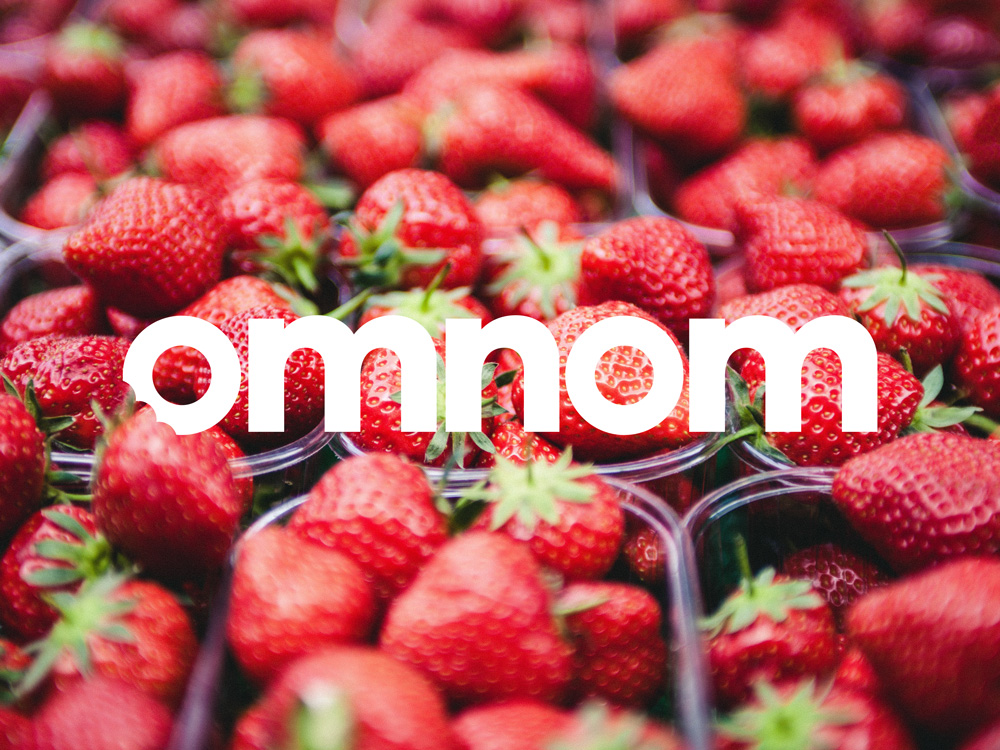
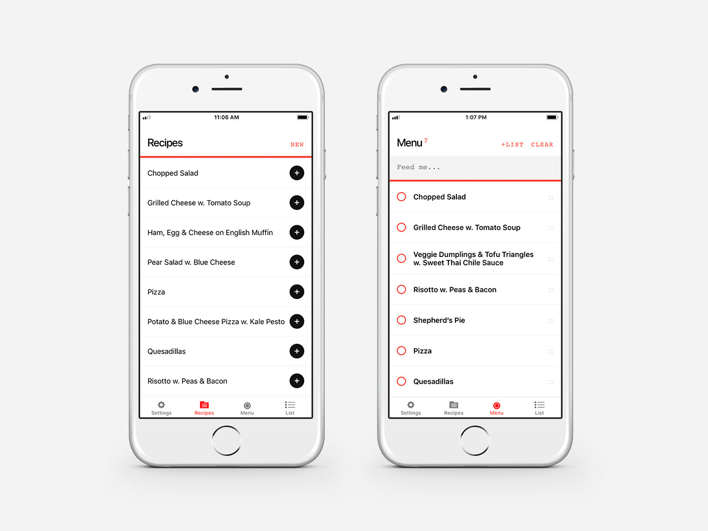
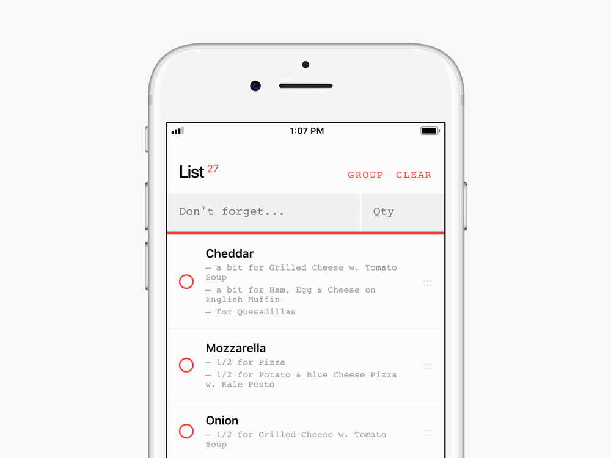

by Dan Perrera
About two years ago, Amy and I made some fundamental changes to how we eat, the result of which was cooking for ourselves more — a lot more. While cooking and baking have turned into a real joy for us, the ceremony of meal planning, list making, and trips to the grocery store always remained a chore.
Meal planning involved digging out recipes from various books and the internet then transcribing the ingredients for each recipe into a shared list in iOS Reminders. After that arduous task, we’d be off to the store to shop, which wouldn’t be so bad if our list stayed in sync but it never did.
Surely there’s an app for that, right?
It turns out that there are tons of “grocery shopping apps” but all of them seem to approach the problem the way a computer might and not necessarily the way a human might. As the saying goes, if you want something done right, do it yourself — and that’s just what we did.
We decided to apply our design and development process to our problem. The result is Omnom, an app designed to improve the grocery shopping experience. It does everything that you might expect from a grocery shopping list with a few notable improvements.

Omnom keeps track of your favorite recipes, allowing you to customize them to your preference. Choose items from your recipes to create a meal plan, then add ingredients for all those items to your shopping list with the press of a button. Omnom eliminates the time-intensive task of transcribing over and over.

Now you’re at the store and you see “3 tomatoes” on the list. Okay, what type of tomatoes do you need? Beefsteak? Roma? Heirloom? We found ourselves asking the question, “What is this for?” again and again. Omnom keeps that data together, giving you all the information you need at a glance.

For us, grocery shopping is a team sport so rock-solid syncing was a top priority. This has been a revelation for me personally. I’ve gone from uninformed cart-pusher to autonomous shopper, cutting down the time that we’re in the store.
Amy and I have been using Omnom for the last few weeks and have already saved so much time. We think that this could be a useful tool for other home cooking enthusiasts and, while it’s not quite ready for a public release, we are looking for a few good beta testers.
If you’d like to help us out, head over to omnom.xyz, review the features in more detail, and sign up to be a beta tester at the bottom of the page.